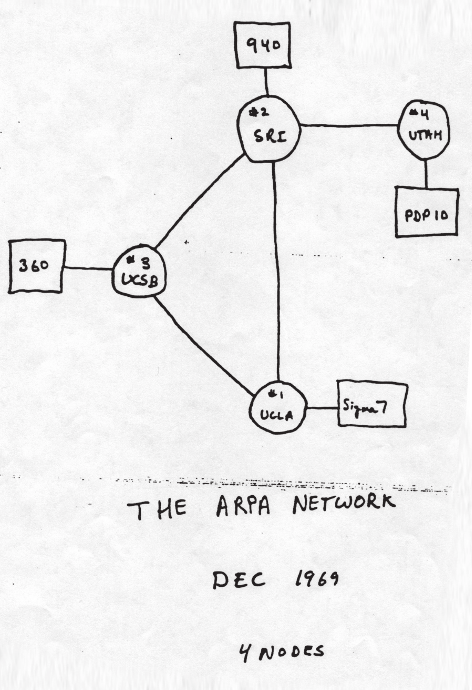

A internet é uma rede global de computadores que se comunicam entre si. Ela é a infraestrutura física e lógica que conecta dispositivos no mundo inteiro, permitindo a troca de dados e o funcionamento de diversos serviços.
A web é um dos serviços que utilizam essa infraestrutura. Ela é formada por um conjunto de páginas interligadas que você acessa por meio de navegadores, utilizando protocolos como HTTP/HTTPS.
A história da internet é recente. Ela surgiu nos Estados Unidos, durante a Guerra Fria, com a criação da Arpanet pela Darpa em 1969. Inicialmente conectava quatro universidades, utilizando a inovadora comutação de pacotes para transmissão de dados. Criada para facilitar a comunicação e o compartilhamento de informações entre diferentes sistemas de computador, a internet inicialmente visava a ser um sistema de comunicação resistente a ataques nucleares e a promover a colaboração acadêmica. A evolução significativa da internet ocorreu com o desenvolvimento de protocolos como o TCP/IP, nos anos 1970 e 1980, e a criação da World Wide Web, por Tim Berners-Lee, nos anos 1990, tornando-a mais acessível e amigável ao usuário. A popularização da internet se deu graças à invenção da World Wide Web, ao avanço da banda larga, ao crescimento do comércio eletrônico e à ascensão das redes sociais, que transformaram a internet em uma parte integral da vida cotidiana.
A internet surgiu como um projeto militar nos Estados Unidos durante a Guerra Fria. Em 1957, o lançamento do satélite Sputnik, pela União Soviética, levou o governo americano a criar a Agência de Projetos de Pesquisa Avançada de Defesa (Darpa, na sigla em inglês) em 1958. O objetivo era avançar as tecnologias de comunicação e evitar um possível ataque nuclear que pudesse cortar as comunicações.
